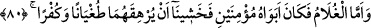
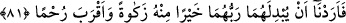

2- Allah’ın, zayıf ve âciz kullarına inâyet ve yardımının bilinmesidir. İlerideki bir
takım âfetlerden habersiz olarak denizde çalışan bu kimselere, peygamberlerden biri
vâsıtasıyla Allah’ın yardımının nasıl yetiştiği görülmektedir. Nasıl belâyı onlardan
uzaklaştırmış, âfeti onlardan kaldırmıştır.
3- Allah Teâlâ bazı vakitlerde zâhirde sâliklerden birinin maslahatını
peygamberlerden birinin maslahatına tercih eder. Halbuki zâhirde peygamber tarafını
ihmal varsa da, işin bâtın yönü yine peygamberin maslahatından hâlî değildir. Nitekim
Allah Teâlâ, geminin delinmesi konusunda miskinlerin maslahatına riâyeti Mûsâ
(a.s.)’ın maslahatına riâyete tercih etmiştir. Çünkü bu, Hz. Mûsâ’nın Hızır (a.s.) ile
arkadaşlıktan ayrılma sebeplerinden olmuştur. Mûsâ (a.s.)’ın zâhirî maslahatı, Hızır
(a.s.)’la sohbet ve beraberlikti. O’nun beraberliğinden ayrılması, bâtınî yönden Mûsâ
(a.s.) hakkında nübüvvet, risâlet, İsrailoğulları’nı dâvet ve terbiye maslahatlarını
içeriyordu.”
Fakir (Bursevî) der ki: Gemidekiler Mûsâ ve Hızır (a.s.)’dan ücret almayınca Allah
Teâlâ onlara bundan daha hayırlısını verdi. Onları zâlim birinin elinden kurtardı. Bu
ihsanda bulunmanın fazîletini gösterir.
80. “Erkek çocuğa gelince, onun ana-babası, mü’min kimselerdi. Bunun için
(çocuğun) onları azgınlık ve nankörlüğe boğmasından korktuk.”
Hızır (a.s.)’ın öldürdüğü “Ceysûr” adlı “erkek çocuğa gelince, onun ana-babası,
mü’min kimselerdi.” Babasının ismi “Kazbûra”, annesinin ismi “Sehvâ” idi. et-
Ta’rîf’te böyle denilmektedir. Onlar Allah’ın birliğini ikrar eden tevhîd ehli kimselerdi.
“Bunun için (çocuğun) onları azgınlık ve nankörlüğe boğmasından korktuk.” Yâni
onları saptırmasından korktuk. Korktuk ki bu ana-baba, çocuklarına duydukları sevgi ve
muhabbetten dolayı ona tâbi olurlar. Böylece îmandan küfre, hidâyetten dalâlete
düşerler. İşte Hızır (a.s.) bundan korkmuştur. Çünkü Allah Teâlâ ona bu çocuğun kâfir
tabîatlı olarak yaratıldığını bildirmiştir.
81. (Devam etti:) “Böylece istedik ki, Rableri onun yerine kendilerine, ondan
daha temiz ve daha merhametlisini versin.”
“(Devam etti:) “Böylece istedik ki, Rableri onun yerine kendilerine,” anne-babasına
“ondan daha temiz” günahlardan, kötü huylardan uzak “ve” anne-babasına “daha
merhametlisini versin.”